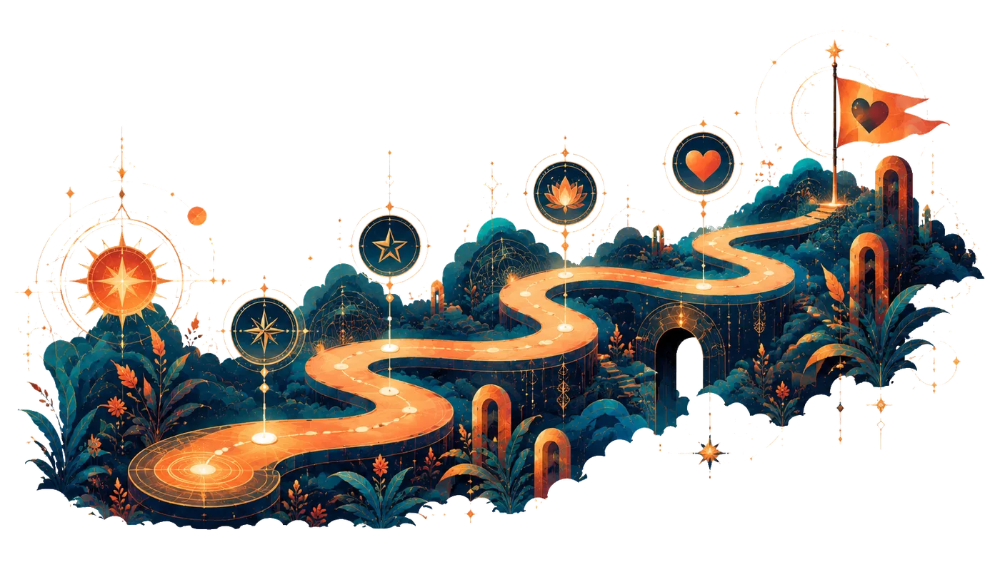

ובתוך כל זה, פוגשים אנשים. ומה יקרה משם? זה כבר חלק מההרפתקה
המסלול של הערב
ערב אחד, רצף אחד, שנבנה בהדרגה

-
01
מגיעים
נכנסים בנחת, שותים משהו, פוגשים את המקום ואת האנשים
-
02
נפגשים במעגל
כמה מילות פתיחה, היכרות קצרה והסבר פשוט על מה שהולך לקרות
-
03
נכנסים לתנועה
משאירים לרגע את המילים בצד, נותנים למוזיקה להיכנס, ומתחילים פשוט לנוע ולהרגיש את המרחב סביבנו
-
04
פוגשים בדרך
לאורך הדרך פוגשים אנשים חדשים, ברגעים קצרים ומשחקיים ולעיתים בזוגות מתחלפים
-
05
נותנים לחוויה להעמיק
הקצב משתנה, התנועה מתרככת, ונפתחים גם רגעים של הקשבה, מבט ונוכחות
-
06
חוזרים למילים
מסיימים במעגל שיתוף פתוח, ואחריו נשארים לתה, יין ושיחות חופשיות
רוצים להצטרף?
השאירו כמה פרטים קצרים. כדי לבנות כל ערב סביב קבוצת גיל קרובה, ייתכן שנשלח לכם בהמשך כמה שאלות קצרות נוספות.
להיכנס לחדר עם אנשים שלא מכירים ולנוע יחד זה לא בדיוק משהו שרובנו עושים כל יום
יכול להיות שבהתחלה זה ירגיש קצת לא מוכר. זה בסדר. לפעמים דווקא שם משהו חדש מתחיל
וכשנותנים לזה רגע, הכול נהיה קצת יותר רך ופתוח
- ✨ מפסיקים לרגע לנסות להרשים
- ✨ מגלים שאפשר להישאר גם כשלא הכול מוכר
- ✨ מגלים שלפעמים דווקא כשמפסיקים לדעת בדיוק מה לעשות, מתחיל מפגש אחר
לא חייבים שהכול יזרום כבר מהרגע הראשון
נותנים לזה זמן
מי איתכם בדרך?
את הערב מנחה אופיר אבירם
יוצר ומנחה מפגשים של מוזיקה, תנועה ושירה. בשנים האחרונות הוא לומד ומעמיק בחיבור שבין מוזיקה, תנועה ומפגש אנושי, ובדרך שבה הם מקרבים בין אנשים, מפחיתים מעט את הצורך להרשים ומאפשרים מפגש פשוט ואנושי יותר
הוא מביא לערב חום, משחקיות, רגישות ואהבה גדולה לרגעים שבהם אנשים מפסיקים להיות זרים
שאלות נפוצות
עם מה יוצאים מהערב הזה? +
אין תשובה אחת. אולי תצאו עם תחושת חופש, אולי עם מפגש מפתיע, אולי עם אדם שתרצו להמשיך להכיר, ואולי פשוט עם ערב שבו הייתם קצת אחרת מהרגיל. אנחנו לא מבטיחים תוצאה מסוימת. אנחנו כן מזמינים אתכם להיכנס לחוויה ולראות לאן היא לוקחת אתכם
צריך לדעת לרקוד? +
ממש לא. אין צעדים קבועים, אין כוריאוגרפיה ואין דרך נכונה לעשות את זה. ההנחיות פשוטות, והמטרה היא לא לרקוד יפה אלא לאפשר לגוף לנוע בדרך שנוחה וטבעית לכם
קשה לי להיפתח. זה מתאים לי? +
יכול מאוד להתאים. לא מצפים מאף אחד להגיע משוחרר מהרגע הראשון. מתחילים פשוט ולאט, ונותנים זמן להתרגל למרחב, לאנשים ולחוויה. אפשר להשתתף בקצב שלכם, לעצור כשצריך ולתת לדברים להיפתח רק אם וכאשר זה מרגיש נכון
יש מגע? +
בחלק מהתרגילים יכולה להיות הזמנה למגע עדין, בדרך כלל אחיזת ידיים. כל מגע הוא אופציונלי ובהסכמה, ואפשר לבחור שלא להשתתף בלי צורך להסביר.
זה ערב הכרויות? +
לא. זו חוויה של מוזיקה, תנועה ומפגש אנושי. לא מגיעים כדי לבדוק מי מתאים למי. מגיעים לחוות. ותוך כדי, בהחלט יכולה להיווצר גם היכרות שתרצו להמשיך.
אפשר להגיע לבד? +
בהחלט. למעשה, זה טבעי לגמרי להגיע לבד. המבנה של הערב מאפשר להיכנס בהדרגה לקבוצה ולפגוש אנשים לאורך הדרך, כך שאין צורך להכיר מישהו מראש או להגיע עם חבר או חברה
כמה זמן נמשך הערב? +
כשעתיים של תוכן מונחה, כולל פתיחה, החוויה המרכזית ומעגל סיום. לאחר מכן נשאר זמן חברתי פתוח למי שרוצה להישאר, לשתות משהו ולהמשיך לדבר עם אנשים שפגש בדרך
צריך להיות “טיפוס של סדנאות”? +
ממש לא. לא צריך ניסיון קודם, ולא צריך להרגיש בנוח עם כל דבר מהרגע הראשון. מספיק להגיע עם קצת סקרנות ונכונות לנסות משהו שונה מהרגיל
מה אם לא בא לי להשתתף בתרגיל מסוים? +
אז לא משתתפים. אפשר לעצור, לנוח בצד, להתבונן ולחזור כשמתאים. החוויה מונחית, אבל הבחירה נשארת שלכם לאורך כל הערב. אין צורך להסביר או להצדיק
אני אפגוש את כולם? +
לא בהכרח, וזה גם לא הרעיון. לאורך הערב פוגשים אנשים שונים ברגעים קצרים, משחקיים ולעיתים בזוגות מתחלפים. המטרה היא לא להספיק את כולם, אלא לאפשר למפגשים לקרות בטבעיות.
ומה אם אפגוש מישהו או מישהי שמסקרנים אותי? +
אז מצוין. האפשרות להכיר היא חלק טבעי מהערב, אבל היא לא מנהלת אותו. בסוף הערב יש זמן חופשי לשתות משהו, לדבר ולהמשיך היכרות שנוצרה בדרך. ולאן זה יתפתח משם? זה כבר לגמרי תלוי בכם